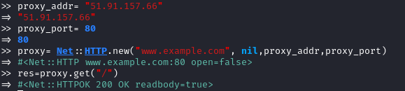
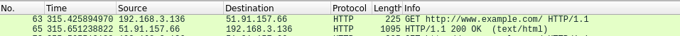
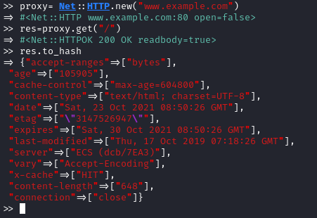
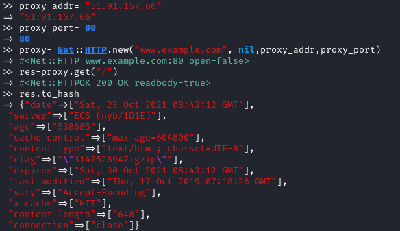

Proxies
Create a Net::HTTP object with the right proxy parameters:
•
address
• port
• user/password (if required).
Free proxies list:
https://www.freeproxylists.net/
proxy_addr= "51.91.157.66"
proxy_port= 80
proxy= Net::HTTP.new("www.example.com", nil,proxy_addr,proxy_port,:use_ssl=>true) #for HTTPS
proxy= Net::HTTP.new("www.example.com", nil,proxy_addr,proxy_port) #for HTTP
#perform a request
res=proxy.get("/")
  we can see that is working because we are
interacting with the proxy server
Test if the Proxy makes changes to headers or
bodySome proxies inspect and edit your requested page, changing response headers or adding new
headers.
Check if our free proxy does it too
• No proxy
• With Proxy:
